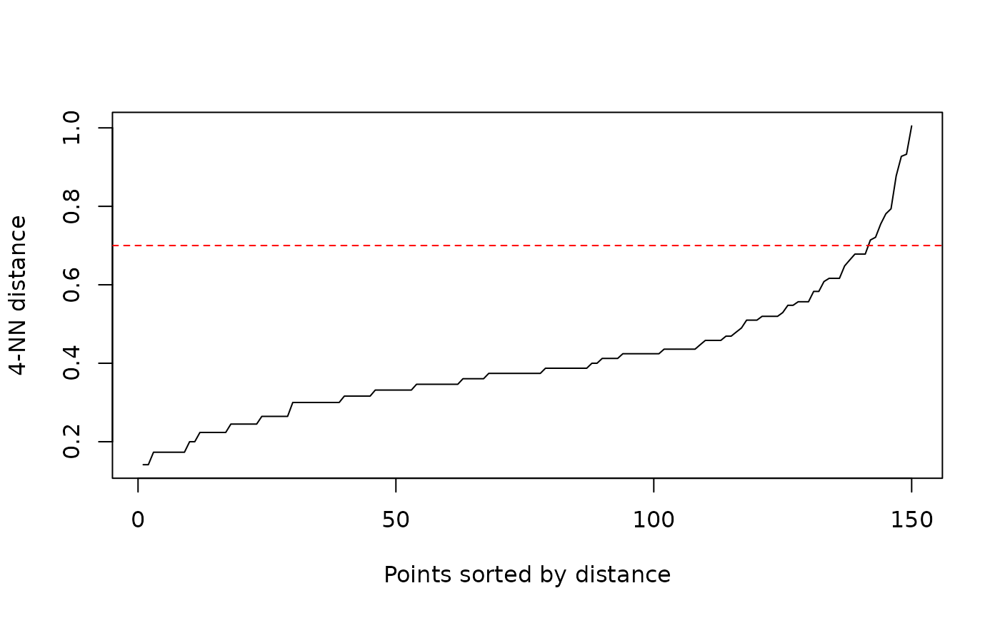
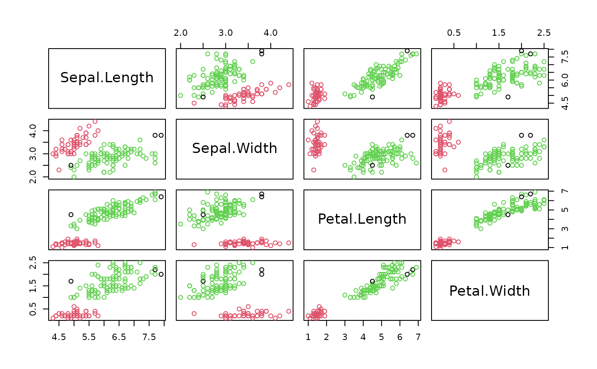
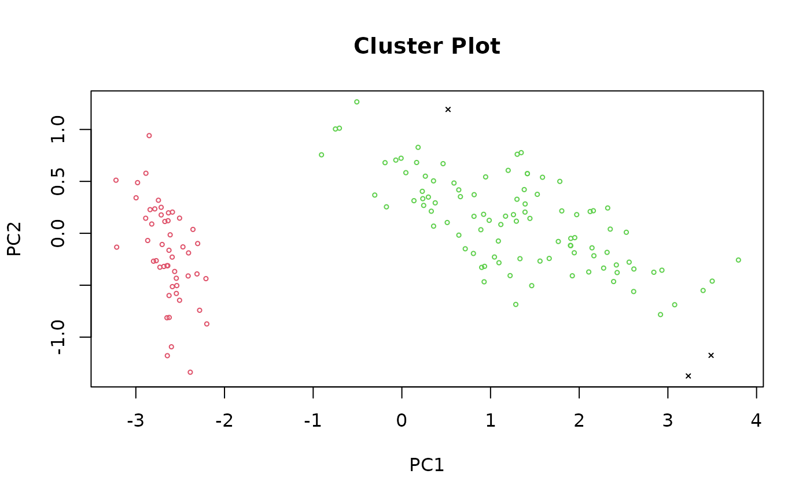
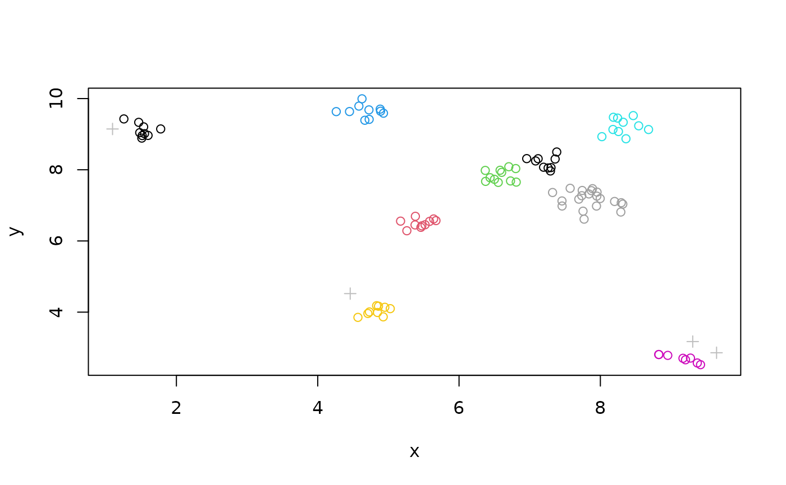
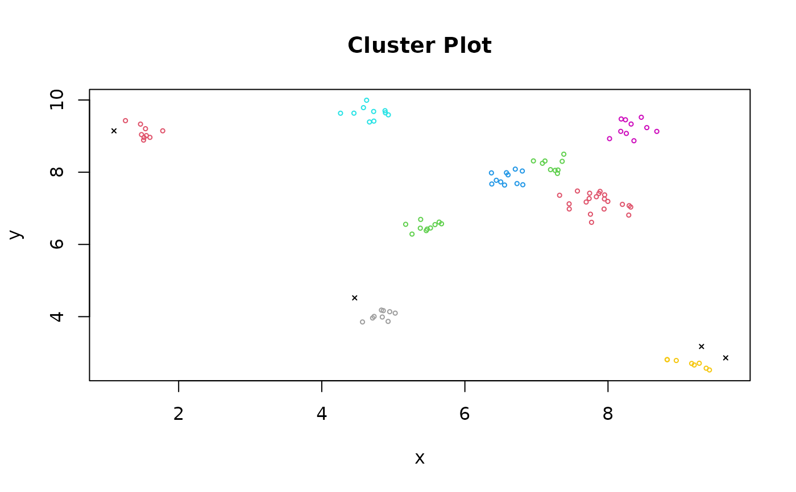
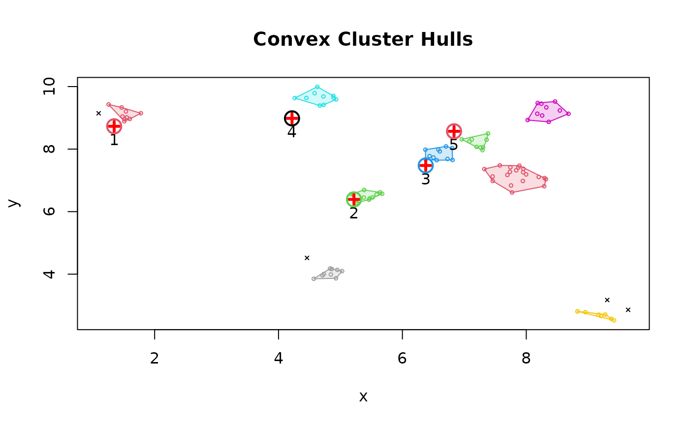

Density-based Spatial Clustering of Applications with Noise (DBSCAN)
Source:R/dbscan.R, R/predict.R
dbscan.RdFast reimplementation of the DBSCAN (Density-based spatial clustering of applications with noise) clustering algorithm using a kd-tree.
Usage
dbscan(x, eps, minPts = 5, weights = NULL, borderPoints = TRUE, ...)
is.corepoint(x, eps, minPts = 5, ...)
# S3 method for class 'dbscan_fast'
predict(object, newdata, data, ...)Arguments
- x
a data matrix, a data.frame, a dist object or a frNN object with fixed-radius nearest neighbors.
- eps
size (radius) of the epsilon neighborhood. Can be omitted if
xis a frNN object.- minPts
number of minimum points required in the eps neighborhood for core points (including the point itself).
- weights
numeric; weights for the data points. Only needed to perform weighted clustering.
- borderPoints
logical; should border points be assigned to clusters. The default is
TRUEfor regular DBSCAN. IfFALSEthen border points are considered noise (see DBSCAN* in Campello et al, 2013).- ...
additional arguments are passed on to the fixed-radius nearest neighbor search algorithm. See
frNN()for details on how to control the search strategy.- object
clustering object.
- newdata
new data points for which the cluster membership should be predicted.
- data
the data set used to create the clustering object.
Value
dbscan() returns an object of class dbscan_fast with the following components:
- eps
value of the
epsparameter.- minPts
value of the
minPtsparameter.- metric
used distance metric.
- cluster
A integer vector with cluster assignments. Zero indicates noise points.
is.corepoint() returns a logical vector indicating for each data point if it is a
core point.
Details
The
implementation is significantly faster and can work with larger data sets
than fpc::dbscan() in fpc. Use dbscan::dbscan() (with specifying the package) to
call this implementation when you also load package fpc.
The Algorithm
This implementation of DBSCAN follows the original algorithm as described by Ester et al (1996). DBSCAN performs the following steps:
Estimate the density around each data point by counting the number of points in a user-specified eps-neighborhood and applies a used-specified minPts thresholds to identify
core points (points with more than minPts points in their neighborhood),
border points (non-core points with a core point in their neighborhood) and
noise points (all other points).
Core points form the backbone of clusters by joining them into a cluster if they are density-reachable from each other (i.e., there is a chain of core points where one falls inside the eps-neighborhood of the next).
Border points are assigned to clusters. The algorithm needs parameters
eps(the radius of the epsilon neighborhood) andminPts(the density threshold).
Border points are arbitrarily assigned to clusters in the original
algorithm. DBSCAN* (see Campello et al 2013) treats all border points as
noise points. This is implemented with borderPoints = FALSE.
Specifying the Data
If x is a matrix or a data.frame, then fast fixed-radius nearest
neighbor computation using a kd-tree is performed using Euclidean distance.
See frNN() for more information on the parameters related to
nearest neighbor search. Note that only numerical values are allowed in x.
Any precomputed distance matrix (dist object) can be specified as x.
You may run into memory issues since distance matrices are large.
A precomputed frNN object can be supplied as x. In this case
eps does not need to be specified. This option is useful for large
data sets, where a sparse distance matrix is available. See
frNN() how to create frNN objects.
Setting Parameters for DBSCAN
The parameters minPts and eps define the minimum density required
in the area around core points which form the backbone of clusters.
minPts is the number of points
required in the neighborhood around the point defined by the parameter eps
(i.e., the radius around the point). Both parameters
depend on each other and changing one typically requires changing
the other one as well. The parameters also depend on the size of the data set with
larger datasets requiring a larger minPts or a smaller eps.
minPts:The original DBSCAN paper (Ester et al, 1996) suggests to start by setting \(\text{minPts} \ge d + 1\), the data dimensionality plus one or higher with a minimum of 3. Larger values are preferable since increasing the parameter suppresses more noise in the data by requiring more points to form clusters. Sander et al (1998) uses in the examples two times the data dimensionality. Note that setting \(\text{minPts} \le 2\) is equivalent to hierarchical clustering with the single link metric and the dendrogram cut at heighteps.eps:A suitable neighborhood size parameterepsgiven a fixed value forminPtscan be found visually by inspecting thekNNdistplot()of the data using \(k = \text{minPts} - 1\) (minPtsincludes the point itself, while the k-nearest neighbors distance does not). The k-nearest neighbor distance plot sorts all data points by their k-nearest neighbor distance. A sudden increase of the kNN distance (a knee) indicates that the points to the right are most likely outliers. Chooseepsfor DBSCAN where the knee is.
Predict Cluster Memberships
predict() can be used to predict cluster memberships for new data
points. A point is considered a member of a cluster if it is within the eps
neighborhood of a core point of the cluster. Points
which cannot be assigned to a cluster will be reported as
noise points (i.e., cluster ID 0).
Important note: predict() currently can only use Euclidean distance to determine
the neighborhood of core points. If dbscan() was called using distances other than Euclidean,
then the neighborhood calculation will not be correct and only approximated by Euclidean
distances. If the data contain factor columns (e.g., using Gower's distance), then
the factors in data and query first need to be converted to numeric to use the
Euclidean approximation.
References
Hahsler M, Piekenbrock M, Doran D (2019). dbscan: Fast Density-Based Clustering with R. Journal of Statistical Software, 91(1), 1-30. doi:10.18637/jss.v091.i01
Martin Ester, Hans-Peter Kriegel, Joerg Sander, Xiaowei Xu (1996). A Density-Based Algorithm for Discovering Clusters in Large Spatial Databases with Noise. Institute for Computer Science, University of Munich. Proceedings of 2nd International Conference on Knowledge Discovery and Data Mining (KDD-96), 226-231. https://dl.acm.org/doi/10.5555/3001460.3001507
Campello, R. J. G. B.; Moulavi, D.; Sander, J. (2013). Density-Based Clustering Based on Hierarchical Density Estimates. Proceedings of the 17th Pacific-Asia Conference on Knowledge Discovery in Databases, PAKDD 2013, Lecture Notes in Computer Science 7819, p. 160. doi:10.1007/978-3-642-37456-2_14
Sander, J., Ester, M., Kriegel, HP. et al. (1998). Density-Based Clustering in Spatial Databases: The Algorithm GDBSCAN and Its Applications. Data Mining and Knowledge Discovery 2, 169-194. doi:10.1023/A:1009745219419
See also
Other clustering functions:
extractFOSC(),
hdbscan(),
jpclust(),
ncluster(),
optics(),
sNNclust()
Examples
## Example 1: use dbscan on the iris data set
data(iris)
iris <- as.matrix(iris[, 1:4])
## Find suitable DBSCAN parameters:
## 1. We use minPts = dim + 1 = 5 for iris. A larger value can also be used.
## 2. We inspect the k-NN distance plot for k = minPts - 1 = 4
kNNdistplot(iris, minPts = 5)
## Noise seems to start around a 4-NN distance of .7
abline(h=.7, col = "red", lty = 2)

## Cluster with the chosen parameters
res <- dbscan(iris, eps = .7, minPts = 5)
res
#> DBSCAN clustering for 150 objects.
#> Parameters: eps = 0.7, minPts = 5
#> Using euclidean distances and borderpoints = TRUE
#> The clustering contains 2 cluster(s) and 3 noise points.
#>
#> 0 1 2
#> 3 50 97
#>
#> Available fields: cluster, eps, minPts, metric, borderPoints
pairs(iris, col = res$cluster + 1L)

clplot(iris, res)

## Use a precomputed frNN object
fr <- frNN(iris, eps = .7)
dbscan(fr, minPts = 5)
#> DBSCAN clustering for 150 objects.
#> Parameters: eps = 0.7, minPts = 5
#> Using euclidean distances and borderpoints = TRUE
#> The clustering contains 2 cluster(s) and 3 noise points.
#>
#> 0 1 2
#> 3 50 97
#>
#> Available fields: cluster, eps, minPts, metric, borderPoints
## Example 2: use data from fpc
set.seed(665544)
n <- 100
x <- cbind(
x = runif(10, 0, 10) + rnorm(n, sd = 0.2),
y = runif(10, 0, 10) + rnorm(n, sd = 0.2)
)
res <- dbscan(x, eps = .3, minPts = 3)
res
#> DBSCAN clustering for 100 objects.
#> Parameters: eps = 0.3, minPts = 3
#> Using euclidean distances and borderpoints = TRUE
#> The clustering contains 9 cluster(s) and 4 noise points.
#>
#> 0 1 2 3 4 5 6 7 8 9
#> 4 9 10 11 10 10 8 9 20 9
#>
#> Available fields: cluster, eps, minPts, metric, borderPoints
## plot clusters and add noise (cluster 0) as crosses.
plot(x, col = res$cluster)
points(x[res$cluster == 0, ], pch = 3, col = "grey")

clplot(x, res)
#> Warning: Not enough colors. Some colors will be reused.

hullplot(x, res)
#> Warning: Not enough colors. Some colors will be reused.
## Predict cluster membership for new data points
## (Note: 0 means it is predicted as noise)
newdata <- x[1:5,] + rnorm(10, 0, .3)
hullplot(x, res)
#> Warning: Not enough colors. Some colors will be reused.
points(newdata, pch = 3 , col = "red", lwd = 3)
text(newdata, pos = 1)
pred_label <- predict(res, newdata, data = x)
pred_label
#> [1] 1 2 3 0 9
points(newdata, col = pred_label + 1L, cex = 2, lwd = 2)

## Compare speed against fpc version (if microbenchmark is installed)
## Note: we use dbscan::dbscan to make sure that we do now run the
## implementation in fpc.
if (FALSE) { # \dontrun{
if (requireNamespace("fpc", quietly = TRUE) &&
requireNamespace("microbenchmark", quietly = TRUE)) {
t_dbscan <- microbenchmark::microbenchmark(
dbscan::dbscan(x, .3, 3), times = 10, unit = "ms")
t_dbscan_linear <- microbenchmark::microbenchmark(
dbscan::dbscan(x, .3, 3, search = "linear"), times = 10, unit = "ms")
t_dbscan_dist <- microbenchmark::microbenchmark(
dbscan::dbscan(x, .3, 3, search = "dist"), times = 10, unit = "ms")
t_fpc <- microbenchmark::microbenchmark(
fpc::dbscan(x, .3, 3), times = 10, unit = "ms")
r <- rbind(t_fpc, t_dbscan_dist, t_dbscan_linear, t_dbscan)
r
boxplot(r,
names = c('fpc', 'dbscan (dist)', 'dbscan (linear)', 'dbscan (kdtree)'),
main = "Runtime comparison in ms")
## speedup of the kd-tree-based version compared to the fpc implementation
median(t_fpc$time) / median(t_dbscan$time)
}} # }
## Example 3: manually create a frNN object for dbscan (dbscan only needs ids and eps)
nn <- structure(list(id = list(c(2,3), c(1,3), c(1,2,3), c(3,5), c(4,5)), eps = 1),
class = c("NN", "frNN"))
nn
#> fixed radius nearest neighbors for 5 objects (eps=1).
#> Distance metric:
#>
#> Available fields: id, eps
dbscan(nn, minPts = 2)
#> DBSCAN clustering for 5 objects.
#> Parameters: eps = 1, minPts = 2
#> Using euclidean distances and borderpoints = TRUE
#> The clustering contains 2 cluster(s) and 0 noise points.
#>
#> 1 2
#> 3 2
#>
#> Available fields: cluster, eps, minPts, metric, borderPoints